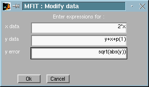
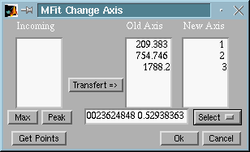
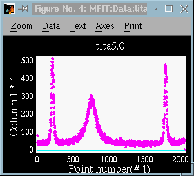
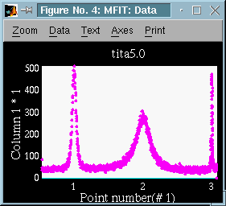

Version 4.2. (1999)
x - [length n, vector] the X axis dataThese are not normally accessible from the Matlab workspace. Anyway, there are two functions that enable to manipulate these variables directly. In all Mfit routines (load routines, fit functions, fitting routines...), these variables are available as local variables.
y - [length n, vector] the Y axis data
err - [length n, vector] the error bars amplitude
selected - [length n, vector] the selected points for fit (0 : unselected, 1 : selected)
p - [length m, vector] the fit function parameters
dp - [length m, vector] the fit function parameters uncertainties after fitting
fixed - [length m, vector] the fixed parameters (0 : free, 1 : fixed)
fit - [usually length n, vector] the fitted curve, evaluated from fit function
Matlab -> Mfit : tomfit
Suppose you have some data stored into the Matlab workspace. You can send these data directly to Mfit by mean of the tomfit function:
Mfit -> Matlab : fromfit>> tomfit(x,y,err,selected,p,fixed);If you use empty parameters for that function (for instance tomfit([],y)), the corresponding Mfit data will be kept (not modified).
Similarly, you can retreive Mfit data into the Matlab workspace by mean of the tomfit function:>> [x,y,err,selected,fit,p,dp,fixed]=fromfit;This enables to perform some operations directly on matlab variables coming from Mfit, and then send them back to Mfit.with tomfit.

Fig 1 : Mfit : Transform pop-up from Data window.
Internal variables can be used here. This method does not require to type commands into the Matlab workspace, as iwhen you use the Exchanging data with Matlab workspace method.
In fact, it acts exaclty the same as the Direct User data entry , but uses the Mfit variables instead of the Matlab workspace ones.

Fig 2 : Mfit : Change X-Axis pop-up from Data window.
1- For this operation, you first select some X-values in the current Data window. Either you enter the numerical values with the keyboard, or you click on 'Get Points' button. In that case a pointer will appear in the Data window. Select the reference points and hit a keyboard key to end acquisition.
Optionally, you can ask to modify these values either into the nearest maxima (Max button), or to compute nearest peak estimates (Peak button).
2- Then transfert these values to the 'Old Axis' catalog, and enter for each of them the real value that better suits you (the one that you would expect) in the New Axis list.
3- Select the order of the polynomial transformation. The corresponding polynome coefficients are displayed.
4- Click on OK button. The Old Axis will then be changed into a New Axis. In the given example (Fig 2), the original axis ranged from 0 to 2000. With a second order transformation, it finally ranges from 0.5 to 3.06, and the data appears stretched:
 -> 
Fig 2 : Mfit : Effect of an X-Axis change on data aspect
If you need to perform an X-Axis change for each loaded data set, with
the same polynome, you can then activate the Auto Rescale
feature in the Options menu of the Mfit : Control
window.